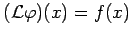
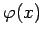
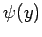
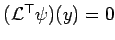
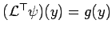
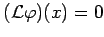
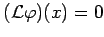

Inhalt Index DeskTop Bronstein

 Lineare Integralgleichungen Singuläre Integralgleichungen Singuläre Integralgleichungen mit Cauchy-Kernen
Lineare Integralgleichungen Singuläre Integralgleichungen Singuläre Integralgleichungen mit Cauchy-Kernen


Die Gleichung  besitzt genau dann eine Lösung , wenn für alle Lösungen  der homogenen transponierten Gleichung  die Orthogonalitätsbedingung
erfüllt ist. Entsprechend besitzt die transponierte Gleichung  genau dann eine Lösung, wenn für alle Lösungen  der homogenen Gleichung  gilt:
der homogenen Gleichung  gilt: